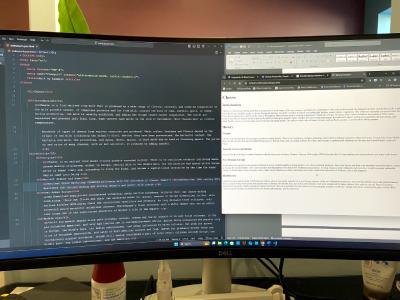

I worked in the food industry for the past 23 years. When I realized that I just didn’t enjoy it like I used to, I started thinking about what I wanted to do. I couldn’t see myself going back to school for a masters in something food safety, but that is what I would need to do to continue to move up the proverbial ladder. Also, I no longer wanted to do the day-to-day firefighting that is quality management in a production facility. When I looked at what I had been doing everyday as part of my job, I realized the spreadsheets, data tracking, Visual Basic kinds of things I was doing were exciting to me and I found myself wanting to understand SharePoint instead of just thinking it was stupid and not intuitive, I realized I knew what I should do. I needed to go back to school and get a degree of some sort in computer science.